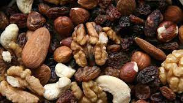
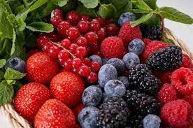
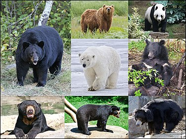

Todo sobre oso

- características sobre osos
- cabeza de gran tamaño
- orejas pequeñas
- ojos pequeños
- Que comen los osos

- frutos secos
- bayas
- fruta
- Top 3 diferentes tipos de osos
- Oso negro americano
- Oson pardo
- oso negro asiatico
Todo sobre los osos sin orden
- características sobre osos
- cabeza de gran tamaño
- orejas pequeñas
- ojos pequeños
- Que comen los osos

- Top 3 diferentes tipos de osos

- Oso negro americano
- Oson pardo
- oso negro asiatico